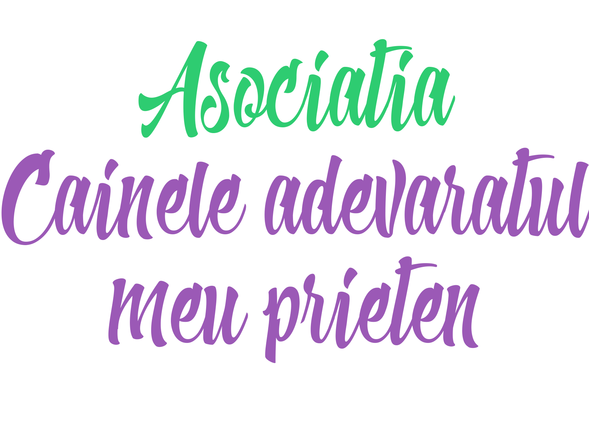
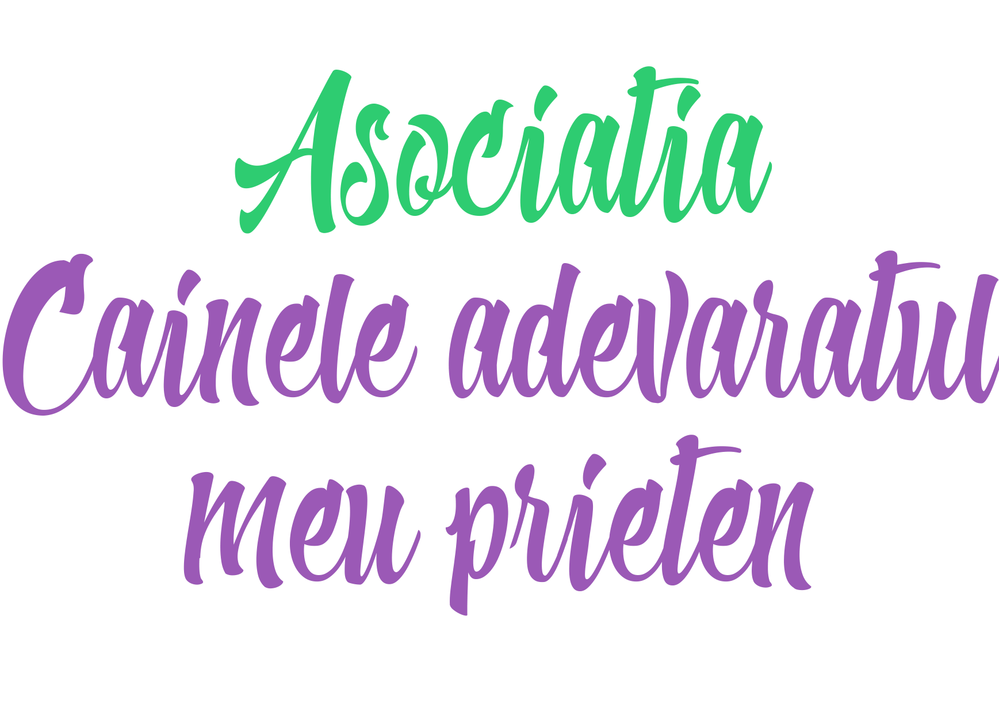

Asociatia Cainele adevaratul meu prieten este o asociație non-profit care nu beneficiază de finanțare din partea autorităților nici pentru activitatea curentă și nici pentru construcția adăpostului. Sursele noastre de venit provin din redirecționarea a 2% din impozitul pe venit al salariaților sau 20% din impozitul pe profit al firmelor, donații sau sponsorizări. Iată cum puteți ajuta și dvs animalele fără să donați de fapt din banii dvs:
După cum probabil ştiţi, fiecare persoană care figurează cu venituri înregistrate la Administraţia Financiară are posibilitatea de a redirecționa 2% din venitul său către o fundaţie sau un ONG. Procedura este următoarea:
1.Procentul de 2% din impozitul dvs pe venit plătit deja către stat este transferat (pe baza formularului 230 completat de dvs) de către Finanțele Publice către Trezoreria orașului dvs de reședință.
2.Apoi Trezoreria respectivă cumulează sumele tuturor celor care completează formularul 230 în favoarea noastră și virează suma totală în contul Cainele adevaratul meu prieten.
În cazul în care în anul precedent aţi avut mai multe surse de venit, atunci trebuie să completaţi după acealași principiu Declaraţia 200:
Dacă nu ştiţi suma pe care o puteţi dona, lăsaţi rubrica necompletată şi ea va fi calculată de către reprezentanţii ANAF. Formularul trebuie trimis prin poştă sau dus personal la Administraţia Financiară unde sunteţi arondat, până cel târziu la data de 15 mai 2017.
Va multumim din suflet pentru sprijinul acordat!

 
